Quantum Mechanics
Chemistry 110B Lecture Notes
You should be reading this document using the latest version of Firefox. This document uses MathML markup to show mathematical expression and equations, and Microsoft Internet Explorer, Google Chrome, and other browsers do not have built-in support to render MathML.
MS IE can render MathML if a Math Player plug-in is installed. Google Chrome requires extensions to be installed for rendering MathML.
These are notes recorded by S. M. Halloran of the lectures given by Dr. Gerd LaMar, professor in the Department of Chemistry at the University of California at Davis. This undergraduate (fourth year level) course is called Chemistry 110B, on the subject of quantum chemistry or quantum mechanics; the 110 course series concerns itself with subjects in physical chemistry. Any errors are not those of the professor but of the student. These lectures were given in the winter quarter of 1982.
Notes on Mathematical Notation Use. Many mathematical symbols and notation are used here.
| Notation | Meaning/Description/Comment | Example |
|---|---|---|
| Inner Product of x and y, and x and y must be elements/members of inner product space. Inner product space is a type of vector space with the additional structure called the inner product. | ||
| This condition defines orthogonal vectors or functions. Orthogonal vectors are right angles to one another in some component of their dimensionality. The symbols x and y can also represent functions as well, in which the operation nonetheless evaluates to zero. |
6 Jan 1982
1803
- Dalton finds atoms are the fundamental elements of matter, indivisible entirely.
- Atomic motion is governed by Newtonian physics.
Both of these statements will prove not true.
- In the first, the atom will be found to be composed of a nucleus and electrons
- In the second, classical (Newtonian) mechanics does not suffice to describe the dynamic properties of this matter
1833. Faraday finds in electrolysis that there is a positive (+) charge
and a negative (−) charge, and that motion is not atomic. He shows that
an equivalent number of electrons yields an equivalent number of atoms, but
that mass calculations do not sum correctly if atoms are indivisible. Thus
Faraday shows that atoms are not the fundamental particles of matter. At this
point a nucleus
is hypothesized.
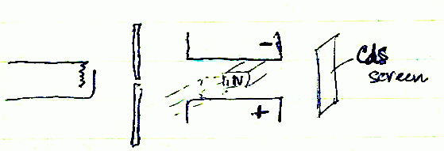
Particles now have a mass and charge. And apparatus is designed that will calculate a mass-to-charge ratio. An electron beam is collimated and its direction is altered with a capacitor in the vertical component and a magnet in the horizontal plane. The electron beam strikes a CdS screen where it glows. Laws of physics are understood: the strength of a magnetic field (H) is proportional to the force generated:
FH = Hev
where v = velocity of the electrons. Centripetal force is also understood to be
Fc = mv2/r
If a centripetal force is applied to the electron by the magnetic field, then:
Fc = FH
and then
e/m = v/Hr
after all the algebra is done. Note that e/m is basically the charge-to-mass ratio of the electron, and so if the values of the right-hand side of the equation are known, then so is the electron charge-to-mass. In addition to the magnetic field component, an electric field component is added to this appartus. The electric field force effect on the electron is:
FE = Ee
When all forces from the electric field E and magnetic field H are factored in, then:
e/m = E/H2r
J. J. Thomson in 1899 had an instrument in which he knew E, H, and could compute r from the bending of the electron beam. The answer Thomson found was that e/m = −1.7588 × 108 C g−1.
- 1 esu = two unit charges in a vacuum separated by 1 cm which generate 1 dyne of force
- 1 C(oulomb) = 3 × 109 esu
- e = 1.602 × 10−19 C = 4.80 × 10−10 esu
In 1909 Millikan did an oil drop experiment in which he ultimately determined the values of e and m that form the ratio. Oil drops were given an electric charge and then allowed to fall with the force of gravity. A counterbalancing force was provided by an electric field. If
mg = Eq
where m is the mass of the oil drop, and E and g are known with it, then the computation is only for q. He eventually determined that the mass of an electron was me = 9.11 × 10−28 g.
In this time of experimental determinations of mass and charge of the electron, it was understood from the model of atoms that their size was about 10−8 cm, which is the value for 1 Å. The atom was believed to have a uniform charge distribution.
Rutherford tested assumptions about atomic size using a thin gold foil. He aimed an alpha particle generator at the gold film and found that most particles shot through the foil against a CdS screen, undeviated from their direction. However, some of the particles were deflected at an angle to the screen, and some were even deflected backward. Thus whatever composed an atom must be such that is was not a solid impenetrable wall.
Rutherford calculated that the 2+ charged alpha particle must have been deflected by a positively charged part of the atom. He could understand something from the deflection based on the following relationships:
mv2/2 = z2/rmin Uelec = Felec r
Rutherford wanted rmin and found a magnitude of 10−12 cm = 10−4 Å. Thus if an atoms extent (diameter) were on the order of 1 Å and its positive charge were 0.0001 Å, this means that the atom is 10,000 times larger than its nucleus of positive charge.
8 Jan 1982
Vectors are an important consideration in quantum chemistry.
Vector addition:
Multiplication of vectors:
Dot Product:
This becomes evaluated as:
Vectors are perpendicular unit vectors, so their products cancel. This simplifies to:
Note that the dot product is commutative:
The vector or cross product of two vectors A and B
where n is perpendicular to A and B. Note that the cross product is not commutative:
However:
The cross product is evaluated by finding determinants:
Differentiation of vectors:
Operators are any symbolic notation that instruct the performance of an operation. These can be quite simple or quite complex. Consider the two defined operators and a function:
The following operations are performed:
This is done by first expressing , then applying the operation , which is to multiply by x (), then applying the differentiation operator:
Carefully note that operations are not commutative:
The gradient vector is del, the upside-down representation of delta, and is the slope of a vector:
Its dot product (square?) is a scalar:
Now consider a function in three dimensions in which the gradient vector operation is applied and evaluated:
The following operations are equal:
Complex numbers are used frequently and have physical significance: c = a + ib and c* = conjugate = a − ib
Thus cc* = c2 = a2 + b2
Operators also have conjugates so that the following is defined:
Eigenvalues are solutions to equations of a function which undergoes an operation to reveal the solution. An eigenfunction is a function that yields an eigenvalue as part of an operation:
In that equation, ρ is the eigenvalue and Ψ is the eigenfunction.
Note the table
| f(x) | A sin ax | B cos ax | C e−ax |
| f′(x) | aA cos ax | −aB sin ax | −aC e−ax |
| f′′(x) | −a2A sin ax | −a2B cos ax | a2C e−ax |
| eigenvalue | −a2 | −a2 | a2 |
11 Jan 1982
In classical Newtonian mechanics it was postulated that the force on a mass is the change in momentum with respect to time
which in a simple one-dimensional system is
In an n-dimensional system there are 3n degrees of freedom and these must be solved for each dimension
Conservative systems have the following true relationship:
This is equivalent to describing a universe where energy is conserved.
If x is a position vector, then the following expression shorthands are used:
Langrangian functions are used to solve many equations and prove theorems in mechanics. Define a function:
In dimension q:
In terms of ℒ:
Hamiltonian functions can be expressed as follows...given:
the following is defined:
There will be 6N solutions for the particle in 3 dimensions in evaluating position, velocity, and time.
For a single particle in one dimension, . If of one dimensional systems.
Solutions of ℋ and ℒ for Harmonic Oscillators.
Hooke's law defines the force on a harmonic oscillator: F = −kx Assume the system is conservative. Therefore,
Note that potential energy is a function of position, kinetic energy is a function of the change of position, and change of position is a function of position and time.
12 Jan 1982
With the knowledge that then,
and the last two terms cancel out. These expressions relate the fact that states of energy (E) are independent of time.
In classical mechanics:
- Total energy in a conservative system is independent of time, i.e. constant
- Energy is continuous
- position {x(t)} and momentum {p(t)} are continuous
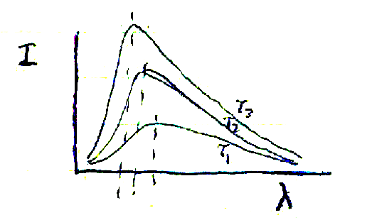
Transition from classical to quantum mechanics began with study of black body radiation and finding that the frequences of light radiated out were discrete in quantity.
An effect of heating the black body is that it produces changes in the wavelength spectrum at different temperatures (see plot). The maximum intensity (peak intensity) shifts to shorter wavelengths as the temperature is increased. Moreover the intensity is proportional the fourth power of the temperature (I ∝ T4). Rayleigh-Jean's law states that the density of radiation (distribution) is as follows:
Max Planck (1900) stated that the energy of a particle in oscillating motion
such as that of the electron had discrete and not continuous motion.
This motion was thus quantized
and energy levels were ε =
nhν where n is essentially an integer from 1 to ∞.
Thus for the electron, the average energy (ε-bar) would follow
a distribution:
Another experiment was of the photoelectric effect by Einstein who determined that h was a constant the was proportional to the frequency of the photonic energy. He showed that electron flow was dependent up the frequency of light and not its intensity.
In spectroscopy the spectra of various atoms and molecules were found to disobey classical mechanics laws. Balmer (1885) derived from regression analysis some rules he found for observations on the spectrum of hydrogen:
Bohr (1913) found a connection between spectral lines and what Planck, Einstein, and Rutherford had found. Taking Rutherford's assumption that an electron moved in a planetary orbiting fashion, he concluded that differences in energy levels corresponded to hν: Δε = ε2 − ε1. Bohr found that angular momentum was quantized and he derived the following equation to express angular momentum:
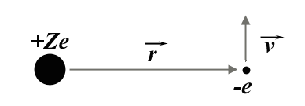
Assume the Newtonian physical model for understanding the forces at work. There is a nucleus with +Ze unit charge. An electron with −e unit charge is a distance vector r away, and it orbits with a velocity vector v (see figure). The following equations apply to the forces on these particles of matter, relating electrical and motion forces:
Since the velocity is known from Bohr's analysis, it is substituted and a solution for the radius is determined:
For n = 1, r = a0 = 0.529 Å, which is the assumed radius of the 1s orbital electron of the hydrogen atom.
The kinetic energy (T) of the particle is evaluated as mv2/2 = Ze2/2r. Potential energy is calculated as −F dx = dV. Since potential energy V = Ze2/r, then total energy E = T + V = Ze2/2r − Ze2/r = − Ze2/2r. Substituting for r:
This equation is quite similar to what Balmer found for the enegy levels of the H atom spectrum series:
Note that ℜ (the Rydberg constant) is me4/2ℏ2. When divided by nc, the constant become ℜ∞ = 109737 −1.
15-18 Jan 1982
De Broglie showed the wave nature of particles in the following relationship:
De Broglie reasoned that a circular motion mimics a wave pattern when plotted linearly, and so 2πr = nλ. De Broglie (1923) showed that Bohr's postulate (nℜ = mvr) was correct, and that 2πr = nh/mv.
Davisson and Germer (1927) demonstrated that the wave nature of particles or electrons by showing that high speed electrons have interference patterns when traversing a diffraction grating.
Postulates: Bridging Classical to Quantum Mechanics
I. System Description By Wavefunction Ψ
A dynamical variable is any property of interest in the system considered. An observable is a dependent answer to the relation which it has with a dynamical variable; an observable can be some function or relation.
A state of a system is completely described as possible given by function Ψ with variables 3N particles with parameters as position, velocity, time, etc.
- Ψ(q1, ..., q3N, t) the describes system completely
- The function Ψ(q1 + dq, ..., q3N + dq, t) is described by the product of the complex conjugate or Ψ(q1 + dq, ..., q3N + dq, t) = Ψ*(q, t) Ψ(q, t) dτ where dτ describes dq1, dq2, ..., dq3N, etc.
For one dimension: p(x) = Ψ*(x)Ψ(x) = Ψ2. This particular evaluation becomes a probability of finding the particle at position x.
It is important to understand that the function Ψ(q, t) has the following characteristics:
- Ψ is not a function that describes anything that is observable. Only Ψ2 or Ψ*Ψ are observable.
- Ψ is continuous because the first and second derivatives are continuous.
- Ψ is single-valued: the domain does not have any value twice
- Ψ must have an integrable square, or If Ψ is a distribution or its square expresses a normal distribution then ∫ Ψ*Ψ dτ = 1. All probability distributions will be normalized. Note that Ψ*Ψ = Ψ2
- Ψ = f(q, t), which means it is a function of time. If the Hamiltonian operation is not operable on a function of time, the Ψ(q) holds and describes a conservative system, one that is time-independent. The function Ψ will describe a stationary state typical of a standing wave, and the energy of this wave is independent of time.
II. Correspondence of systems
For every observable, there is a corresponding linear Hermitian operator (Ô) so that
The Hermitian operator allows us to describe a real system. Thus without an equality, an imaginary system would exist:
If , and Ψ1* is a complex conjugate of Ψ1, then by rule of operators and complex conjugates.
Integrating:
Because expressions 1 and 2 are equal, it is then true that and then eigenvalue a1 must equal its complex conjugate a1*, and moreover, a1 must be real. In this case, the Hermitian operator must be linear.
Before discussing the next postulate, a summary of how components compare between classical and quantum mechanics:
| observable | classical mechanics | quantum mechanics | |
|---|---|---|---|
| time | t | t | does not change |
| position | q | q | does not change |
| momentum | mass is removed from the evaluation because wave mechanics is used |
The conversion of kinetic energy from classical to quantum mechanics illustrates this example:
For V(q, t) → V(q;t) which makes use of spherical or cylindrical coordinates as Cartesian coordinates are messy.
III. Wave Function Must Generate Eigenvalue (And Be Eigenfunction)
From Ψi, an operator must generate an observable and should obtain an eigenvalue
The one property whose value is wanted is that of the energy of the system. The one operation that produces this value is the Hamiltonian and the eigenvalue is the energy Ei. The operation is known as the time-independent Schrödinger equation where the operation is the solution.
IV. The Expectation Value of The Wave Function
Ψi is such that That is, Ψi is not an eigenfunction for the operation . The value <P> is defined as:
as the expectation value and represents an average or mean. The expectation value does not exist itself but is an average. For the eigenfunction Ψi, <P> = Pi or the eigenvalue.
Theorem #1: The products of two Hamiltonian operators are equal if the two operators commute (deduced from the QM postulates).
Proof: and therefore the operators commute.
The proof of this theorem will extend to Heisenberg's uncertainty principle, which states that position q and momentum p will never be known if we take only one coordinate.
Theorem #2: Ψi, Ψj,... are eigenfunctions of a Hermitian operator () Thus where n = ∞. If it is true that there are two eigenfunctions where none of the values are equal (αi ≠ αj), then < Ψi Ψj > = 0.
Proof:
Furthermore αi* = αi by the 3rd postulate and < Ψj Ψi >* = < Ψi Ψj >
Rearranging then: ( αj − αi < Ψi Ψj > = 0. Now (αj − αi) is nonzero so < Ψi Ψj > = 0, and the integral is orthogonal.
Note that < Ψi Ψi > = 1 and < Ψi Ψj > = 0 or the form < ΨiΨj > = δij where δij = 1 when i = j and δij = 0 when i ≠ j (normalized vs. orthogonal).
V. The Time Evolution of The Wave Function
The time evolution of any state function Ψ(q, t) is given by the solution of
This is called the time-dependent Schrödinger equation for a conservative system. For such a conservative system:
20 Jan 1982
Conservative system then
Note that Ψ(q) is a function representing the stationary state, where properties are independent of time.
Evaluating the left-hand side:
This means that
which is the time-independent form.
Constant A represents the energy of the system as the Hamiltonian operator on a wavefunction should produce the time-independent state of the energy.
Suppose there is a need to use time-dependent equations to determine the probability of finding a particle at certain coordinates in the system. This is represented by the expression:
Note that the natural exponents evaluate to 1. In calculating the probability, dependence on time is no longer a factor. And so the expectation value of q (< q >) is time-independent. The expectation value reflects that is not an eignenfunction.
Summary
- called Hermitian
- expectation value (not from eigenfunction)
- no time dependence when describing a conservative system
Now we can see systems that employ these quantum mechanical postultes. Suppose there is a particle in motion in one dimension with V = 0.
One solution for this is that:
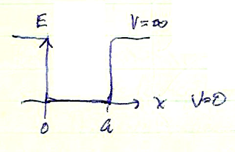 Consider that the particle is in a box infinitely deep where the energy E at values shows that V = ∞, then V = 0. Outside the depicted box, x ≤ 0 and x ≥ a.
Solution:
When V(Ψ) = ∞ (infinite potential energy), it is assumed that the particle has left the box. When , the only solution can be when Ψ = 0, and so Ψ* Ψ = 0. Thus the probability of finding the particle within the box is 0.
Now suppose inside the box, the conditions are V = 0, x ≥ 0 and x ≤ a. From , solving for probability:
Thus α2 = 2mE / ℏ2.
A possible solution to this equation is Ψ(x) = A sin αx. Some characteristics of a function are already known, such as Ψ(0) = Ψ(a) = 0. For this to be true, Ψ(0) = A sin α(0) = 0 and Ψ(a) = A sin α(a) = 0. If αa = nπ, where n is an integer, that creates a solution for α = nπ/a. Thus our solution looks likes this: .
Taking the second derivative:
Now computing the probability, the complex conjugate is necessary:
The solution for A is
Because and and α = n π / a, then
The system is quantized as follows:
The figure below shows the typical wavefunctions and the probability of the particle in one dimension.

22 Jan 1982
To review the particle-in-a-box system
- E → ∞ in n number of discrete values
- E ≠ 0
- E increases with the number of nodes given by Ψ This is expected by the de Broglie relationship (λ = h / p)
- With either a large a and m will be inversely proportional to a continuum
Heisenberg's Uncertainty Principle
It is well known that particle position (x) and momentum (p) are the main factors in the principle:
The expectation value = 0 because the momentum in all directions is averaged. To the left and to the right, the final sum will be zero.
because for <p>, a ± real number results. The expectation value not zero but either the momemtum of the wave particle in the left or right direction. The uncertainty of the particle is in the x-direction:
Because [noting that ]
The evaluation of ⟨x⟩ = a / 2. Thus we would expect to find the particle at x = a / 2, or in the middle of the dimension, on average. The uncertainty in x (Δx) = ±2 (a/2) = ± a, or between 0 and a:
One dimensional systems are rare, and so the system is developed for 3-dimensional space instead. A particle in 3-dimensional space is bounded by a box of dimensions a, b, and c, such that the coordinates in xyz space are bounded as 0 ≤ x ≤ a, 0 ≤ y ≤ b, and 0 ≤ z ≤ c. In these cases, potential energy (V) = 0. If x ≥ a, y ≥ b, z ≥ c, then V = ∞. Ψ = 0 outside the box.
The Hamiltonian does the following operation on wavefunctions:
In order to employ absolute differentials, we define:
The theorem holds that the differential must equal a constant. In the final analysis: or or that the components of energy are for the jth dimension.
The solution for three dimensions is really an individual solution for each single dimension:
25 Jan 1982
In the previous discussion, the solution for a 3D conservative system was reduced to three solutions:
The solution for and the product symbol solving this is
Suppose a = b = c, that is the box is a cube. Then
In the ground state, n = m = o = 1, thus
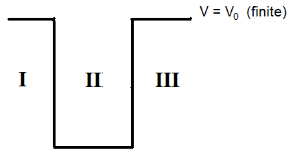 For E211, E121, and E112, the energy states will be degenerate. It is important to remember these relationships:
Note the Hamiltonian expresses the energy and the operator produces a result showing the energy in a conservative system.
Solving the Schrödinger equation for a particle in a 1-dimensional box but expressing V is some value other than ∞ or zero:
For region I:
A possible solution is of the type: as and so . For ΨIII, the solution must be ΨIII = 0 as x → ∞.
For ΨII:
The solution is:
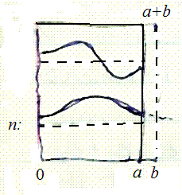 For finite potentials, the nodes of the wavefunction do not approach zero. when determining the probability, the particle should penetrate the barrier. Because there an uncertainty outside of the region, the only way to detect the uncertainty is to have walls as thin so as to detect the particle outside the region. Sometimes, for solutions to 3D space, the Hamiltonian cannot handle one variable at a time. If there is such a case when a Ψ for cannot be found (that is, ), then the expression
is a good approximation and we can just drop conveniently.
will be the exact solution. If is another wavefunction which is much less than Ψn0, then the solution will be much more exact.
is also a much more exact equation.
Rigid Rotor Quantum Mechanics
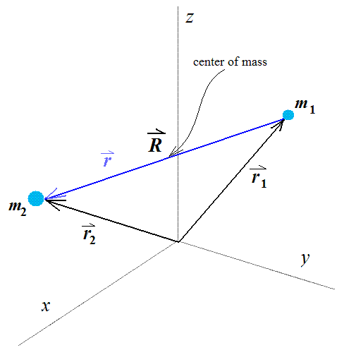 The position vector in the figure represents the center of mass. If so,
By substituting, the following is derived:
The operation will depend upon and : and the energy of the rotor is and
Solutions for
Rectangular coordinates are substituted with polar/angular coordinates:
- x = r cos θ sin φ
- y = r sin θ sin φ
- z = r cos θ
Both operators and are modified as follows:
For a rigid rotor, we define r = r0, and
27 Jan 1982
The intent of working in polar/angular coordinates is to work the wavefunction as follows: . Multiplying by sin2 θ:
A solution to this expression is:
If , so
Evaluating Θ(θ), set
Θ(cos θ) is a power series in cos θ. For this ε, there are 2J + 1 degenerate states.
The table shows J and M value inputs and the result for Θ (cos θ):
| J | M | Θ(cos θ) |
|---|---|---|
| 0 | 0 | √2 / 2 |
| 1 | 0 | √(3/2) cos θ |
| ±1 | √(3/8) sin θ | |
| 2 | 0 | √(3/8)(3 cos2 θ − 1) |
| ±1 | √(35/16) sin θ cos θ | |
| ±2 | sin2 θ |
- separation of variables for Ψ
- solve for Φ → M is an integer
- solutions for Θ, must give J = |M|
- E = B J(J + 1)
- θ solutions are polynomials in cos θ (Legendre polynomials)
29 Jan 1982
Vibrational (Not Rotational) Mechanics
 The vibrational aspects of two masses connected by a flexible bond is now
considered. Examination of the potential energy diagram reveals that the
changes in bond distance r permits the application of Hooke's
Law (F = −kx). When r = re, potential energy
V = 0, that is, there is no potential energy. So
. The classical solution for a harmonic
oscillator is:
The vibrational aspects of two masses connected by a flexible bond is now
considered. Examination of the potential energy diagram reveals that the
changes in bond distance r permits the application of Hooke's
Law (F = −kx). When r = re, potential energy
V = 0, that is, there is no potential energy. So
. The classical solution for a harmonic
oscillator is:
The solution then for the energy of the system is:
If , then . Define : thus . The ratio α/β will simply drop out if the potential α is considered to be very low.
Possible solutions are but only can hold since the function with exponent > 0 unbounded and not an integrable square.
In fine, one sees that α/β = 1 and the solution for the energy is simply
Hermite solved this polynomial for computation of energy to get the accuracy for quantum oscillators.
The energy of an oscillator is never equal to zero the particle would be at the bottom of the energy well, which means it would be possible to know the position and the momentum of the particle, in violation of Heisenberg's Uncertainty Principle.
| ν | H(ξ) | H(q) |
|---|---|---|
| 0 | 1 | 1 |
| 1 | 2ξ | 2q√(β) |
| 2 | 4ξ2 − 2 | 4βq2 − 2 |
| 3 | 8ξ3 −12ξ | 8β2q3√(β) −12q√(β) |
| 4 | 16ξ4 − 48ξ2 + 12 | ... |
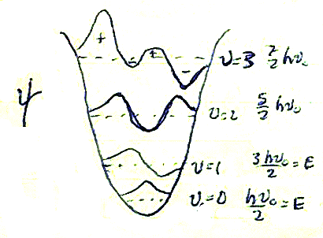 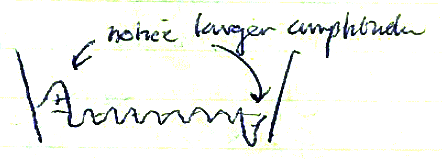 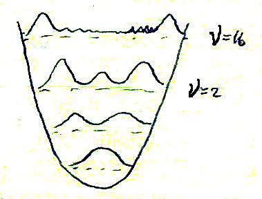
Legendre polynomial form:
At n = 16, there are 15 nodes. The probability is evaluated as Ψ* Ψ.
At ν = ∞, the probability is essentially a parabola or a pendulum.
1 Feb 1982
Notes seem to be missing or recorded elsewhere for this lecture!!
3 Feb 1982
From the previous lecture it was shown that the transition moment Rij is given by:
Because the first term will go to zero,
Note that
and the last expression for Rij has the form:
The following conditions apply:
In these ωe represents the fundamental frequency, 2 ωe = 1st overtone, 2 ωe = 2nd overtone, etc.
Examining the nuclear-nuclear vibration, the dipole moment

At V(re), the value is V at the bottom of the well, as shown in the figure.
The transition from the vibration to the next overtone (a resonance standing wave of F) is expressed in this energy equation.
Suppose light is shone in the infrared spectrum to induce vibrational transitions. Consider that Δν = ±1 and ΔT = ±1 for rotation. The rotation-vibration spectra are given and known to occur.
The Central Field Problem in Quantum Mechanics
The Central Field Problem expresses the idea that potential depends only upon distance. Obviously potential is just dependent upon the distance. In the rigid rotor, dr = 0 between the two nuclei. Consider there is one mass with dr ≠ 0.
In addition, V = V(r). The Hamiltonian will express the energy
The interest is in the electronic structure:
This operation must be put into (1) spherical coordinates and (2) separate variables:
The equation is:
Divide by 1/r2 and then by RΘΦ:
The left- and right-hand sides are set equal to a constant −k and then solutions are sought for θ and φ.
If the left-hand side of the equation is substituted for −m2, this is recognizably the rigid rotor system:
for m = 0, ±1, ±2, ... is a solution. This completes the solution of Φ.
As to the solution for Θ:
Using Legendre polynomials:
where N = normalization constant:
is the expression which shows spherical harmonics. The solution to the energy of the system is not contained in this expression. Energy informatin is dependent upon R(r) and this is factored out.
5 Feb 1982
Notes seem to be missing or recorded elsewhere for this lecture!!
8 Feb 1982
When p → ∞ as α → ∞, then 1/p → 0 and the equation above becomes The solution:
If one assumes , the polynomials F(p) is defined as . The solution for these equations are found when we have the form λ = l + 1 + q. A quantum number n is chosen with the restriction that n ≥ l + 1. The value n is defined as the principal quantum number. Its relation to the energy of the system is that it gives the quantum number for the radial function of the orbiting electrons. It relates to Bohr's determination of energy levels in spectroscopy.
The classical solution for the Bohr radius is and this substitution is made in to the energy for an electron
With the definition of the principal quantum number . The wavefunction examples are in the form Rn, l (r):
- For the angular or azimuthal quantum number l whose range is 0 ≤ l ≤ n − 1 and whose magnetic quantum number m is 2l + 1 or ±l, the appropriate angular functions;
- However note that E = − (Ze2/2a0) (1/n2) and n ≠ f(l, m) and the degeneracy of energy levels at n will be n2
In the angular or spherical harmonics of the hydrogen atom, the quantum number l = 0, 1, 2, 3,... is described by a letter, respectively, s, p, d, f, g, .... The principal quantum number is given as a number. A table is constructed such that:
| n | l | m | ||
|---|---|---|---|---|
| 1 | 0 | 0 | 1s0 | |
| 2 | 0 | 0 | 2s0 | |
| 2 | 1 | 0 | 2p0 | |
| 2 | 1 | ±1 | 2p±1 | |
| ... | ||||
| 3 | 2 | ±2 | 3d±2 | |
| Note that the radial part should be constant, depending upon nthe angular part should be consistent for all l, m | ||||
 The squared value is not particularly satisfying for determining the probability
distribution of finding a wave-like particle at a particular r.
The probability of r being at a particular distance is
The squared value is not particularly satisfying for determining the probability
distribution of finding a wave-like particle at a particular r.
The probability of r being at a particular distance is

10 Feb 1982
 The relationship
was defined in order to find the probability of a particle (electron)
being found at distance r relative to another particle (the nucleus).
The expected or probable value will be at the Bohr radius for the 1s
orbital (= a0). This is predicted because 2s posssess
the higher states. Note that the number of nodes (n − 1)
increases with energy. The radial function is the only quantity changing.
The relationship
was defined in order to find the probability of a particle (electron)
being found at distance r relative to another particle (the nucleus).
The expected or probable value will be at the Bohr radius for the 1s
orbital (= a0). This is predicted because 2s posssess
the higher states. Note that the number of nodes (n − 1)
increases with energy. The radial function is the only quantity changing.
The p orbital shows that the angular part is calculated into the probability. The number of radial nodes for a p orbital are n − l −1. This is strictly the radial distribution and not the angular distribution. The radial node = 0. The total is n − 1 so there must be l angular distribution nodes.
Angular Distributions
When l = 0, the orbital is of s type and mathematically the
distribution is seen as a sphere. The sign in the s orbital
indicates some confidence in the ability of the orbital to form a bond.
When l = 1 with three m values, these are signified
2p0, 2p−1, and 2p+1.
 The geometry of the distribution depends solely on R and bonding. The angular
dependence is
and
The geometry of the distribution depends solely on R and bonding. The angular
dependence is
and

In the pz orbital map, there is no dependence upon φ. The representation of px and py is difficult for complex functions. The solution for Ψ1 and Ψ2 is
If we combine these as then
and the radial function r defines vector x which defines vector y with nodes in their respective planes.
The calculation of the distribution of d orbitals is again based upon simple mathematics
Note that the radial component depends upon r2 (n = 3).
The l part is solution is derived from the Legendre polynomial. Recall changing m is dependnet up φ.
Note that the complex function e±2iφ will be really cos φ or sin φ.

12 Feb 1982
The wavefunction in review is:
Function Y refers to the spherical harmonics functions and describe the angular momentum component of the Ψ wavefunction. The classical description of angular momentum is where expresses momentum in one-dimension (linear movement). The cross product is expressed in a matrix and the determinant is computed as
With respect to quantum mechanics, the square of the angular momemtum vector becomes
The components are:
That certain operators must commute to give simultaneous eigenvalues for some eigenfunctions shows that commutation operators must equal zero. Not so for angular momentum:
This hold for H-like atoms, and it should be noted that no eigenfunctions are present.
This last expression states that any component of angular component can be determined, but no others (not all of them). Commuting operators allow for solutions. Furthermore, solutions must be shown for for the choice of determination of .
The spherical coordinate expressions used in proof for is
The following solution must be considered:
The solution is an eigenfunction and the eigenvalue gives us the solution for the z component of angular momentum for the particular state.
Multiplying by ΦΘ:
Θ and Φ are constants in this case.
 When the operator is used, the form
appears. This expression tells us about the total
angular momentum because l(l + 1) is an eigenvalue of the
wavefunction.
When the operator is used, the form
appears. This expression tells us about the total
angular momentum because l(l + 1) is an eigenvalue of the
wavefunction.
Thus on a sphere, the z component given by the quantum number m is such that our particle with angular momentum can be anywhere on a circle in the particle z plane with unknown x and y coordinates. Note in the figure, m = −1, −2, −3 corresponds to
15 Feb 1982
Notes seem to be missing or recorded elsewhere for this lecture: was this an official holiday?
17 Feb 1982
In the previous lecture, the following relationships were shown: have solutions that are complex and messy.
The operators were re-defined as
These can be algebraically manipulated to give a solution to the operators in dimensions: and what this yields is What these expressions say is that the z component is raised by one (in the first case) and lowered by one (in the second case). This has the appearance of an eigenfunction, but it really is not.
Thus which simplifies to , which proves the definition made above. Thus are operators yielding eigenvalues for any function.
What has not been described here is the hydrogenic wavefunction completely. For any electronic system described, there is a fourth quantum number known as ms, which has an angular momentum of own representing the spin momentum of the electron, represented by the vector S. A classical equation can not be derived. All particles (protons, even non-charged) have an intrinsic angular momentum. Because classical mechanics cannot be used to derive the momentum value, the following postulates apply.
- Operators for spin angular momentum commute (SAM) commute in the same way as operators for orbital angular momentum (OAM) previously considered. These operators are analogous for both of the momentum values. Just as describes the OAM vector-to-operator derivation with its dimensional component vector-to-operator derivations, so does . With new operators come new functions as well. As described the particle of a system, it must now include the particle spin in its description. The dependence of spin can be separated from Ψ as a variable of the whole wavefunction, but does not become part of Ψ, which leads to the next postulate
- For a single particle such as an electron, there are only two possible wavefunctions Ψs which are called α and β. The wavefunction for the particle is now expressed more properly as
In all operators , the operators also must generate eigenvalues of their functions and are defined as follows for both spins α and β:
The function α then should be ms = ½ and for β ms = −½.
Likewise, it is found that
A rule is needed for assigning electrons into unique and single states. The spectroscopic evidence is used to show the orbital states of the hydrogen atom for l = 0, 1, and 2.

| Selection rules are: Δn = anything Δl = ±1 Δm = 0, ±1 |
This shows that transitions like is not allowed, but and are allowed.
19 Feb 1982
Polyelectronic Systems
A system with a +Z state nucleus is now considered. For an atom which is neutral (equal numbers of protons and electrons), the Hamiltonian is . Conventions on atomic units must be noted: and 1 Hartree (H) = unit of energy = e2 / a0 = 27.2 eV. For a hydrogen atom, the energy of the ground state is E = −Z2/2n2 = −1/2H.
For hydrogen-like atoms, the appropriate operator is for one electron. For n-electron systems:
The total Hamiltonian will be the sum of the individual Hamiltonian operations for each electron. This takes into account only the nuclear-electronic attraction interaction and does not compute the electron-electron repulsion. To compute the electron-electron interaction, the Hamiltonian is modified thusly: and is of the form
There is really not exact mathematical solution such as that given by a separation of variables. The constraints that all apply.
A two-electron system will serve as an example of how to evaluate or determine the system, with the wavefunction represented as It is fundamental that the electrons are indistinguishable in the system. Assuming that one wishes to know where the electrons are, then where Ψq are considered functions with real number domains. The total wavefunction for the two-electron system is which is a summed wavefunction that reveals that electrons can assume either state.
The squared wavefunction becomes: The middle term evaluates to zero because these functions are orthonormal: the product of two functions which are orthogonal is zero.
The probability of the two electrons being found in either state should be equal, so c2 = 1, or c = ±1. The following wavefunctions are defined:
These definitions satisfy an indistinguishability rule. The permutation operator, is defined and it commutes with
The permutation operator is such that it generates eigenvalues by the mathematical operation of switching functions:
P12Ψ+ corresponds to a spin quantum number which describes particles as bosons, which are α particles with intrinsic spin. In contrast P12Ψ− corresponds to particles described by a half-integral spin quantum number, and these particles are fermions, which include protons and electrons.
If the permutation operation P12Ψ− is used to determine all possible ground states for the helium (He) atom, the list of wavefunctions would be:
These functions describe a state in which only the spin of both electrons is changing. And the following permutation operations apply:
The operation generates eigenvalues (of +1) for two of the operations. For functions Ψ2 and Ψ3, since the operation of commutes, a linear combination of Ψ2 and Ψ3 is described:
The coefficient 1/√(2) is a normalization factor. Applying the permutation operation to this wavefunction shows it is an eigenfunction describing a boson, and so this can be eliminated.
The wavefunction is defined, and its permutation operation produces a result that is a valid state for the system. The substituted values of the wavefunction components show the proper expansion:
This expression is actually the Slater determinant of a 2 × 2 matrix This states that the spin of two electrons in an orbital in the ground state cannot be the same. If the spin quantum numbers were identical, then Ψ = 0, a state that cannot exist. This expression confims the (Wolfgang) Pauli Exclusion Principle.
The determinant of the matrix for any system with n electrons is described by a matrix with a rows for the number of orbitals available in the system and b (= n) columns for the count of electrons available
The result will be the following sum of multi-factor products: The energy will be the sum of the individual Hamiltonian operations. The energy for the interaction in the ground state helim (He) atom and because , then for this system: Hartress or 8 EH, which 8-fold the energy for a single electron hydrogen atom.
22 Feb 1982
A separation of the wavefunctions for each of the particles has been demonstrated and that the energy of the system is the sum of each energy calculated for the separated particles. Thus the total energy for two 1s electrons is ET = 2 ε1s for the He atom. The energy in Hartrees will be ET = −(Z2/2n2 = 8 EH = −4.
How does theory compare with experiment? Theoretical computations show a value of −108.8 eV but experimental evidence shows that the total energy is −78.98 eV a value that is unacceptably 27% lower. Theoretical computations of the ionization potential of the He atom, ET(He+) - ET(He), show a value of 54.4 eV while experimental results show 24.6 eV, a value 55% lower than computed. The reason for the greatly differing values is because electron repulsion energies have not been factored in. Perturbation theory is required so as to make higher order corrections. A Taylor series expansion mathematically provides the more approximate answer. Given a reiteration of the allowed mathematical operations
The electron repulsion potential is represented by the operation and so the representation of energy computation is It should be noted that Ψ0* = Ψ0 for wavefunctions Ψ0 in real number domains.
Processing the integral of spin functions:
The first two integral addends each evaluate to 1 when a normalization is applied, and the last addend is an integrand evaluating to 0 because α1β1 and α2β2 are orthogonal. The spin function component has a final value of 2. And now the equation simplifies to:
The interaction of the potential has been incorporated into the functions. The new computations show values of -74.8 eV and 20.6 eV, now very close to the experimental values.
Variation Principle
Given an approximate function in which the boundary conditions are the same, the expectation value will always have solutions less (in theory) than the true empirical value. Thus, in the energy of the ground state (1s) in the He atom, the true or correct total Hamiltonian evaluates to -74.8 eV while the experimental (actual) was -78.98 eV. The value -108.8 eV was the solution for an exact Hamiltonian describing a two-electron hydrogen atom with a charge of Z = +2, and of course this is not very exact.
An improved (more refined) expression is considered for the states of electrons in ah He atom applying the Hamiltonian for two electrons in a 1s orbital of that kind of atom:
In the first expression above, four terms were introduced that essentially add up to zero, but they are introduced intentionally and regrouped in the second expression. The trial wavefunction is given, where Z' is the effective nuclear charge and it figures into energy dependence since Z' varies. The expectation value is therefore:
The following shows that E is a maximum at a certain value Z':
 What can be expected for n-electrons in orbitals other than 1s
in hydrogenic systems? The electrons closest to the nucleus will generally have
the lowest potential energy and those more distant from the nucleus should have
greater potential energy. Consider placing one electron in the 1s orbital
and another either in 1s or 2p. The electron in 2p will
be located with little to no probability of being at a radial distance which
describes the 1s orbital. And the relative 2p energy is higher
than that of 2s.
What can be expected for n-electrons in orbitals other than 1s
in hydrogenic systems? The electrons closest to the nucleus will generally have
the lowest potential energy and those more distant from the nucleus should have
greater potential energy. Consider placing one electron in the 1s orbital
and another either in 1s or 2p. The electron in 2p will
be located with little to no probability of being at a radial distance which
describes the 1s orbital. And the relative 2p energy is higher
than that of 2s.
 The 3s orbital has a much greater probability of being less screened
than 3p and much the same with 3d. Thus the relative energy
level should also depend upon quantum number l. The number of nodes
in the radial distribution is zero for p orbitals, but is two in the
angular function.
The 3s orbital has a much greater probability of being less screened
than 3p and much the same with 3d. Thus the relative energy
level should also depend upon quantum number l. The number of nodes
in the radial distribution is zero for p orbitals, but is two in the
angular function.
24 Feb 1982
| He: | |
| Li: | |
| Be: | |
| B: | |
| C: |
In the last wavefunction, not that the two electrons can be in the same p orbital or in two different p orbitals. Which is allowed? First examine the energy computations by using angular momentum vectors (not operators).
Let orbital 1s = φ and 2s = η for the description of functions which follow. What are the possible permutations of orbitals and spins?
In the triplet state, where spin is changed, the following mathematical description is seen:
The energy seems not to depend upon spin, and it depends only upon space. The functions Ψ+ and Ψ− are chosen and the energy values worked out for the singlet and triplet states. Looking at carbon (C) atom, the Hamiltonians are evaluated:
The last integral expands as follows
Now , and because α and β functions are orthornormal (among other things) and a normalization is done so that the final value sums to 1, the entire integral evaluates to 1.
The first two addends in the sum are actually identical since this just is about difference in naming electrons which are not different in their properties with respect to wavefunction and energy. The equation now simplifies to:
The first term above is the Coulombic integral (classical) and is expressed by , where K = the Pauli exchange integral and has no classical analogue. The result is thus Esinglet = J + K and Etriplet = J − K.
26 Feb 1982
The Aufbau Principle
| mL | ||
| ms | ||
| mL + ms |
An n-electron wavefunction will now be expressed with all its components. The quantum number L will now be symbolized in different forms. The following correspondence will now be defined:
L = { 0, 1, 2, 3 } → { S, P, D, F }
A new representation called term symbol is represented as 2S + 1LJ, where 2S + 1 is the spin multiplicity.
The Slater determinant of the He atom is: Possible values of mL = 0, ∴ L = 0, and mS = +½ and −½, ∴ S = 0.
| Excited states of helium: | mL = 0L = 0 → S | mS = 1S = 1 | } 3S triplet | |
| mL = 0L = 0 → S | mS = 0S = 0 | |||
| mL = 0L = 0 → S | mS = 0S = 0 | |||
| mL = 0L = 0 → S | mS = −1S = 1 | 1S | ||
| Other excited states: He* | mL = −1, 0, +1L = 1 → P | mS = −1, 0, +1S = 1 → triplet | 3P, 1P only states | |
| Li: | 2S doublet | |||
| Be: | 1S singlet |
The term symbol will be such that L is expressed solely as representing electrons in partially filled shells/orbitals.
| mL | mS | ||
|---|---|---|---|
| Ψ1 | 2 | 0 | |
| Ψ2 | 1 | 1 | |
| Ψ3 | 1 | 0 | |
| Ψ4 | 1 | 0 | |
| Ψ5 | 1 | −1 | |
| Ψ6 | 0 | 1 | |
| Ψ7 | 0 | 0 | |
| Ψ8 | 0 | 0 | |
| Ψ9 | 0 | −1 | |
| Ψ10 | 0 | 0 | |
| Ψ11 | −1 | 1 | |
| Ψ12 | −1 | 0 | |
| Ψ13 | −1 | 0 | |
| Ψ14 | −1 | −1 | |
| Ψ15 | −2 | 0 | |
One will necessarily get mL values = 0, 1, 2 and get L = 0, 1, 2 with S, P, and D states. What are the spin multiplicities of the functions? For S = 0 and 1, they are 2S + 1 = 1 and 3. All the wavefunctions can still be separated and permuted from both orbital (n, l) and spin functions (mS).
| mL | mS | states | 1D | 3P | 1S | |
|---|---|---|---|---|---|---|
| 2 | 0 | 1 | * | |||
| 1 | 1 | 1 | * | |||
| 1 | 0 | 2 | * | * | ||
| 1 | −1 | 1 | * | |||
| 0 | 1 | 1 | * | |||
| 0 | 0 | 3 | * | * | * | |
| 0 | −1 | 1 | * | |||
| −1 | 1 | 1 | * | |||
| −1 | 0 | 2 | * | * | ||
| −1 | −1 | 1 | * | |||
| −2 | 0 | 1 | * | |||
| 15 | 5 | 9 | 1 |
The relative energies of the different electrons in all the S, P, and D states.
1 Mar 1982
Molecular Orbital Theory (Chemical Bonding)
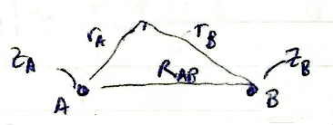 With the H atom wavefunctions and energy states considered, attention is now directed to a hydrogen molecule with a single electron (H2+). The relationship between the two nuclei and the single electron are shown geometrically in the figure.
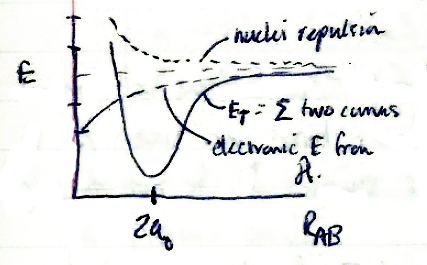 This is not solvable with all kinetic and potential energy terms. It is assumed therefore that an electron has faster motion than either nuclei A or B (the Born-Oppenheimer Approximation). Thus the electron is likely to be located anywhere, and finding the energy E based on an instantaneous fixed moment in which A or B do not change either position or momentum. The only thing necessary is to determine the energy at different values of RAB
The kinetic energy terms of the nuclei are separable and constant. And so the Hamiltonian is expressed in terms of the energy of the electron.
The Hamiltonian produces the eigenvalue representing the energy of the electronic Hamiltonian and the nuclear potential at a fixed RAB.
Therefore and thus total energy ET = electronic energy +
Solutions can be found under the following conditions
| Condition | Molecule | Hamiltonian Energies |
|---|---|---|
| RAB → ∞ | H+ + H | 0 + (−½) H |
| RAB → 0 | He+ | (−2 H) |
Note that equilibrium radius re = 2a0. Converting to elliptical coordinates (μ, ν, φ) where . So it is necessary to convert and the Hamiltonian is separable: Φ is solvable and is of the form which has the solution available from harmonics as:
Shooting from one to two electrons and again turning to the Variation Principle to find an approximate solution to the Schrödinger equation. The mean value is expected to be the energy value.
Variation Theorem:
For an exact Hamiltonian (not an approximate) the expectation value is the true energy value. The more approximate solution to a re-configured Hamiltonian are values that are always greater than the true energy values. Approximating the state of the MO by using LCAO as given by the previous theorem. You take the two 1s orbitals combined them to get the 1σ2 MO. Thus:
where χμ is the particular AO considered.
The energies are differentiated and minimized to arrive at correct values. φ had been used before for AO, but χ is used now to show that the functions are approximate now, as χ is not an eigenfunction. is used to describe nuclei A and B in the H2 molecule.
This represents the operations on the numerator. The energy computation also includes the denominator:
The normalization of produces where
It can be proven that , and the expansion of these will be called integral β. The value α will be defined as any expression of the type which can also be proven.
The value for energy is finally expressed with substitution of all the newly defined parameters:
Differentiating the function with respect to CA while holding CB constant
if looking for a minimum. The term
The numerator term thus should be evaluated so that it equals zero. In evaluating the expression represents the minimum. CA and CB can be zero, but what about other coefficients/variables? For an n electron system, an n × n matrix for a solution by determinants:
3 Mar 1982
The Variation Theorem was used to determine the expectation value for ⟨E⟩. The solution will have three unknowns in two linear equations but ⟨E⟩ can be written as a power series:
| ⇓ | ⇓ | |
| ⇓ | ⇓ | |
Reviewing the previously shown quantitites: and and , the wavefunction must describe all particles of count n in the form . Thus an n × n matrix with its corresponding coefficients to solve for E (given an operation with
The integral above evaluates to the result 1.
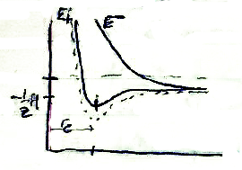 These integrals will determine the bonding. HAA solely represents the Coulombic forces in the molecule (= Coulombic integral), and HAB represents the stabilization of the electron between the two nuclei (= resonance integral).
The plots of E+ and E− vs. radius reveal that the minimum of E− is actually r = ∞. The excitation of E+ to E− will mean dissocation of the molecule. Thus the E+ represents stability in bonding (it is the bonding profile) while E− represents dissociation (it is the antibonding profile). 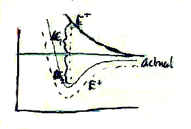
ΔE2 (bonding energy) < ΔE1 (antibonding energy) is always true; these are shown in the figure. The ground state for the hydrogen molecule is seen. For excited states, wavefunction Ψ is constructed such that:
where Ψ* is the linear combination of different orbitals.
 It is the case that E+ (2s) >
E− (1s). Orbital 2p0
will have a much larger separation of Ψ+ and
Ψ− and have energies similarly described.
Applying the momentum operator
and for 2p0,
It is the case that E+ (2s) >
E− (1s). Orbital 2p0
will have a much larger separation of Ψ+ and
Ψ− and have energies similarly described.
Applying the momentum operator
and for 2p0,
| Orbital | Λ | MO |
|---|---|---|
| 2s0 | 0 | σ |
| 2p1 | 1 | π |
| 3d | 2 | δ |
5 Mar 1982
Notes seem to be missing or recorded elsewhere for this lecture
8 Mar 1982
In the previous lecture there was an effort to use the LCAO method for a more exact approximation of the MO of the H2 molecule. The following wavefunctions were described previously:
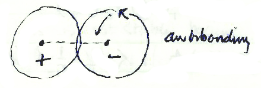
All this is for homonuclear molecules and the following operations apply:
| 0 | g (gerade) | |
| 0 | u (ungerade) |
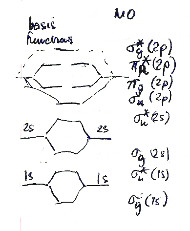 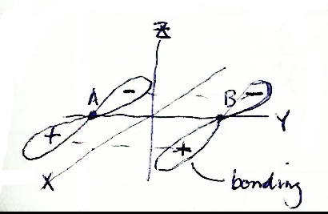 is the inversion operator.
for m = 0 [note ] → σ; m = 1 → π; m = 2 → δ.
is symbolized as ; as . For excited states of the H2 molecule, the variation theorem is applied to approximate the true energies.
For orbital 2pz Bonding = Antibonding =
The higher the count of nodes, the more the energy as seen in every system.
For orbitals 2px and 2py: Bonding = Antibonding =
In the case of
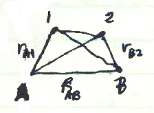 The development of the mathematics to describe these energies was done using the hydrogen molecular ion (H2) model. Moving on to the helium (He) atom, it is treated as a two-electron, two-proton model with relationship of distance between all elements indicated in the figure. If the total Hamiltonian was computed according to the relationships in the figure (aside from the reality of the molecule):
This can be expressed also as:
This Hamiltonian operates on the wavefunction The energy of this two-electron, two-proton model is partitioned as well:
Additional effects are sought for the quantum mechanical wavefunction because new terms are constructed mathematically so that the wavefunction closely approximates what would be observed experimentally. for complex molecular interactions, this would result LCAOs with at least 50 to 100 terms. In the final analysis, a wavefunction like this emerges:
Only a few operators will apply will prove not to be eigenfunctions (they do not produce eigenvalues). Only the operation works.
also has coordiates of angular momentum at the origin of the electron and not at the internuclear origin. Only the operation is quantized, but it has no 2 λ + 1 degeneracy. The MO term symbol is 2SHΛg, u. Λ = 0 → Σ Λ = 1 → Π. Total degeneracy: each orbital state is only two-fold degenerate each spin state is 2S + 1 degenerate
Describing the hydrogen MO again:
10 Mar 1982
At end of previous lecture, there was an MO expression which can be evaluated as Λ = ∑ λi and for S = ½ − ½ = 0 → (2S + 1 = 1) H2+ is simply
Excited states of H2: Possible values or the other states such as |α β|, |β α|, or |β β| which expresses two states: 3Σn and 1Σu, and by Hund's Rule, 3Σn will have the lowest energy.
The following picture of diatomic molecules emerges:
| Molecule | Ψ | Λ | S | State |
|---|---|---|---|---|
| He2 | 0 | 0 | 1Σg | |
| It should be noted that this is not stable because E(He2) > 2 × E(He). Thus He2 does not form. | ||||
| He2+ | 0 | ½ | 2Σu | |
| Li2 | 0 | 0 | 1Σg | |
| B2 | 0 | 0 | 1Σg | |
| 0 | 0 | 3Σg | ||
| 0 | 1 | |||
| 0 | 1 | |||
| 2 | 0 | 1Δg | ||
| −2 | 0 | |||
| Thus for boron there are three possible states, in order of relative energy: 1Σg > 1Δg > 3Σg | ||||
| C2 | 1Σg | |||
| N2 | the is completely filled | 0 | 0 | 1Σg |
| O2 | 1Σg 1Δg 3Σg | |||
| F2 | 1Σg | |||
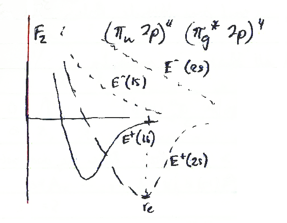 The definition of bond order is ½ of the number of electrons in a bonding orbital less the number of electrons in antibonding orbitals [½ (bonding orbital #e−) − antibonding orbital #e−)]. Thus the following bond orders can be calculated: H2+ = ½, H2 = 1, He2+ = ½, He = 0, Li2 = 1.
In the bonding between 1s a minimum energy well exists and there is higher stabilization energy. But in 2s bonding, 1s MO bonding is essentially at dissociation energy and there is not a likelihood of a . Orbital 2s is more stable.
12 Mar 1982
It should be noted that
Substituting:
Expressions such as and are of the form , which describes the probability of the electron orbiting around nucleus A (or B). These terms are called ionic terms, as they pertain to all electrons gathering around one nucleus and creating a polarity (dipole) or ionic character to the molecule.
The terms and refer to covalent terms since they reflect the sharing of electrons between nuclei in the molecule. They also account for electron repulsion which must figure into the approximation.
Valence Bond theory is a means of figuring the MO calculation, the ionic terms. The space partition is written:
The MO theory did not account of electron interaction, which is called correlation, and this states that electrons cann be found on the same nucleus. as it is implemented weights the phenomenom of electron correlation too significantly; better approximations will have to be made. 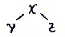
- MO theory works better in determining wavefunctions for π-conjugated and π-bonding electrons.
- VB theory works better σ orbital characterization.
- VB theory works solely for ground state characterization; excited state system are not really allowed.
- VB theory takes into account only one bond and takes no account of delocalized electronic systems.
The energy of the system will not be an exact Hamiltonian; we are forced to find an expecation value.
Because ΨMO and ΨVB represent extremes of describing the state, a parameter λ is used to mix in with a small fraction of the MO.
When λ = 0, Ψspace = ΨVB; when λ = 1, Ψspace = ΨMO. λ is figured at approximately 0.25 (not considered for this course). For H2, described by
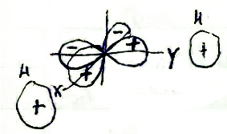 If electrons are placed within 2px and 2py orbitals, a geometry might be predicted that produces H2O bond angles at 90° (see figure).
Rather than be concerned with the details, excited states of atoms are shown that in bonding will significantly reduce the energy of the system.
15 Mar 1982
Valence Bond theory was discussed in its capacity to make excellent approximations in system computations. Also considered were orbitals and geometries of molecules other than merely diatomic molecules (namely polyatomic). For H2O, the following wavefunction was predicted:
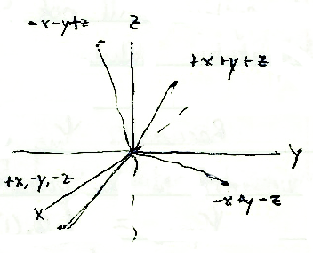 The geometry of H2O did not agree with the orbital theory however. When methane (CH4) is considered, it is seen as necessary to excite an electron in order to make the orbitals equal in energy, but in bonding with the H atom, there is great stabilization. The wavefunction for the hybrid is:
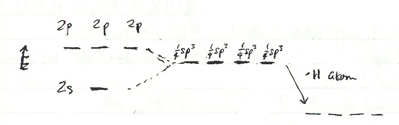 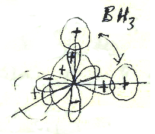 Consider borane (BH3). First the electronic configuration of the boron (B) atom: In the sp2 hybridization, an electron is put into an excited state 2p. Note that bond angle predictions show 90° but are actually 120° as would be expected. 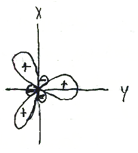 Looking at ethylene, the total wavefunction for its electronic structure should be computed using VB theory. There are eight electrons in the bonding scheme of ethylene (H2C=CH2) and the final wavefunction is the product of the wavefunctions for each bond:
For C-C bonds, both σ and π hybridization can be expressed:
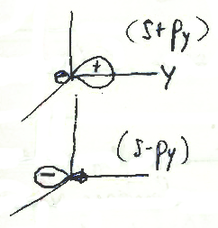 For describing the sp hybrid of acetylene (ethyne):